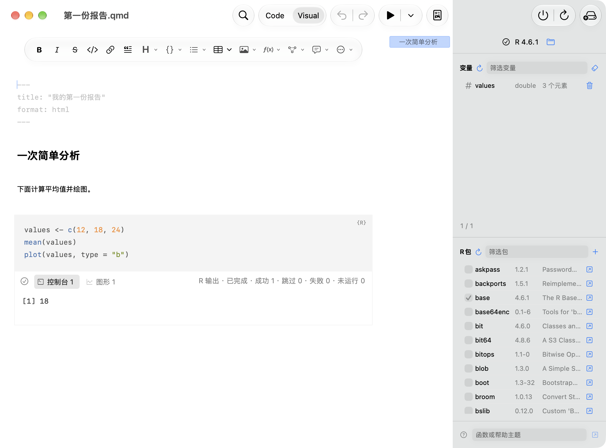

快速开始
用下面的三点数据完成一份从源码到 HTML 的报告。示例只用基础 R，不需额外数据文件。
1. 准备环境
在“Rnotebook → 设置… → 环境”中检测 Rscript、Quarto 和必要依赖。按需选择可执行文件、R 包目录，或明确点击安装缺失包。更换 R 或包目录后重启 R 会话。
只写笔记时，可以先不启动 R 或配置 Quarto。
2. 新建或打开笔记
使用“文件 → 新建”或 ⌘N，可以先写内容再命名。已有文件通过 ⌘O 打开；支持 QMD、RMD。每份文件打开在独立窗口。
按 ⌘S 选择位置与文件名。未命名文档首次运行或渲染前会先出现系统保存面板；取消保存就不会继续该操作。
3. 写一份最小示例
切到 Code，将下面的内容复制到自己的笔记中。这里的示例仅作为文字显示。
---
title: "我的第一份报告"
format: html
---
# 一次简单分析
下面计算平均值并绘图。
```{r}
values <- c(12, 18, 24)
mean(values)
plot(values, type = "b")
```
切换到 Visual 查看排版。标题、列表、表格、图片和公式也可通过格式/插入菜单或编辑工具栏添加。

4. 运行 R 代码
把光标放进 R 代码块，按 ⌘↩ 运行当前块，或点击块旁的运行按钮。⇧⌘↩ 运行全部代码块。首次运行会按需启动该文档的 R 会话。
运行后查看结果及右侧变量。需要中断正在执行的代码，按 ⌘.；停止或重启整个 R 会话会清除变量，应用会先要求确认。
运行后 mean(values) 应得到 18，绘图显示三个点。右侧变量出现 values，打开只读预览可查看 12、18、24。把最后一个数改为 30 再运行，平均值应变成 20。这能同时检验编辑、执行、结果和变量更新。
5. 保存与继续写作
默认在停笔约 1 秒、持续输入最长约 5 秒时保存已命名文件。可在“设置 → 文档”调整或关闭自动保存；关闭后用 ⌘S 保存。内部恢复草稿保护继续开启。
发现外部文件变化时，应用自动加载/合并无冲突修改；关闭该选项后先比对。冲突时保存暂停，先选择要使用的版本。
6. 导出报告
点击工具栏的 Quarto 图标，或使用“文件 → Quarto 渲染导出…”（⇧⌘E）。选择格式、保存位置、完成后是否打开，以及 YAML 或自定义参数。确认后导出。
渲染会重新执行文档。像示例中的 values 一样，所需对象应在代码中创建，不要只依赖交互会话。失败时在导出面板查看日志；PDF 缺少引擎或依赖时，先配置环境。

生成 HTML 后，检查标题、平均值与图是否齐全。若交互计算成功而导出提示找不到对象，先确认创建该对象的代码块也写在文稿中且未被跳过。